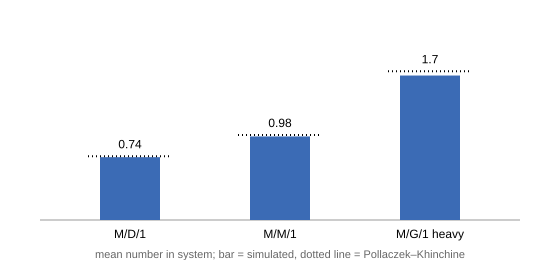

M/G/1 and why distributions matter
The M/M/1 formulas used memorylessness twice. Real service times are rarely exponential: a checkout basket has a fairly predictable size, a database query is usually tiny but occasionally enormous. This page keeps Poisson arrivals and lets the service distribution be anything — M/G/1 — and shows that what matters about it is its variability, through one formula.
The Pollaczek–Khinchine formula
Write $E[S]$ for the mean service time and define the squared coefficient of variation,
\[CV^2 = \frac{\mathrm{Var}(S)}{E[S]^2},\]
a scale-free measure of variability: $CV^2 = 0$ for a constant, $1$ for the exponential, $> 1$ for distributions more erratic than exponential. For an M/G/1 queue under FCFS (first come, first served), the mean number in system is
\[L \;=\; \rho \;+\; \frac{\rho^2\,(1 + CV^2)}{2\,(1-\rho)}.\]
This is the Pollaczek–Khinchine (P–K) formula. Only the mean and variance of $S$ enter. Two readings:
- With $CV^2 = 1$ it reduces to $\rho/(1-\rho)$ — M/M/1 again.
- $L$ grows linearly in the variance, at fixed load. Waiting is caused not just by how much work arrives but by how lumpily it arrives.
The intuition: your wait is dominated by the chance of getting stuck behind one huge job. Halving the variance of service times halves the queueing part of the delay without buying a faster server.
Three service laws, one load
Fix $\lambda = 1$ and mean service $E[S] = 0.5$, so $\rho = 0.5$ for all three of:
| model | service law | $CV^2$ | P–K $L$ |
|---|---|---|---|
| M/D/1 | constant $0.5$ (Dirac) | 0 | 0.75 |
| M/M/1 | exponential, mean $0.5$ | 1 | 1.0 |
| M/G/1, heavy | Gamma, shape $1/4$, mean $0.5$ | 4 | 1.75 |
Same arrival stream, same mean work, and the theory says the queues differ by more than a factor of two. Simulate all three (16 replications each, the four-standard-error convention):
using Concourse, Statistics
function mg1_model(service)
net = QueueNetwork(param_names = (:lambda,))
source!(net, :arrive; interarrival = Law(:Exponential, scale = inv(Param(:lambda))))
station!(net, :desk; discipline = FCFS(), servers = 1, service = service)
sink!(net, :done)
route!(net, :arrive, Always(:desk))
route!(net, :desk, Always(:done))
compile(net)
end
function replicate(f, m, θ, horizon, nreps; seed0 = 1000)
vals = [f(simulate(m, θ, horizon; seed = seed0 + r)) for r in 1:nreps]
mean(vals), std(vals) / sqrt(nreps)
end
pk(ρ, cv2) = ρ + ρ^2 * (1 + cv2) / (2 * (1 - ρ))
cases = [("M/D/1", Law(:Dirac, value = Const(0.5)), 0.0),
("M/M/1", Law(:Exponential, scale = Const(0.5)), 1.0),
("M/G/1 heavy", Law(:Gamma, shape = Const(0.25), scale = Const(2.0)), 4.0)]
println(rpad("model", 14), rpad("measured L", 18), "P-K exact")
for (name, law, cv2) in cases
m = mg1_model(law)
est, se = replicate(r -> time_average(number_in_system, m, r), m, [1.0], 2000.0, 16)
println(rpad(name, 14),
rpad(string(round(est, digits = 3), " ± ", round(se, digits = 3)), 18),
pk(0.5, cv2))
endmodel measured L P-K exact
M/D/1 0.739 ± 0.006 0.75
M/M/1 0.983 ± 0.024 1.0
M/G/1 heavy 1.7 ± 0.079 1.75
Equal means, equal loads — and the measured queues fan out exactly as the variance says they should, each within noise of its dotted line.
The escape hatch: processor sharing
The P–K penalty is a property of FCFS, not of the workload. Run the same heavy-tailed law under processor sharing (PS, from the disciplines page):
function mg1_ps(service)
net = QueueNetwork(param_names = (:lambda,))
source!(net, :arrive; interarrival = Law(:Exponential, scale = inv(Param(:lambda))))
station!(net, :cpu; discipline = ProcessorSharing(), servers = 1, service = service)
sink!(net, :done)
route!(net, :arrive, Always(:cpu))
route!(net, :cpu, Always(:done))
compile(net)
end
mps = mg1_ps(Law(:Gamma, shape = Const(0.25), scale = Const(2.0)))
est, se = replicate(r -> time_average(number_in_system, mps, r), mps, [1.0], 2000.0, 16)
println("PS with the heavy-tailed law: L = ", round(est, digits = 3),
" ± ", round(se, digits = 3), " (M/M/1 value: 1.0)")PS with the heavy-tailed law: L = 0.945 ± 0.024 (M/M/1 value: 1.0)The variance penalty is gone: under PS the mean occupancy depends on the service law only through its mean, so $L = \rho/(1-\rho)$ for any service distribution. This property is called insensitivity, and it is the reason the disciplines page found PS mediocre on low-variance work but promised it would shine here: PS never wins big, but it never pays the variance penalty either.
Insensitivity returns as a star player in the BCMP case study, where it holds for whole networks. Before that, we need more than one station: networks.